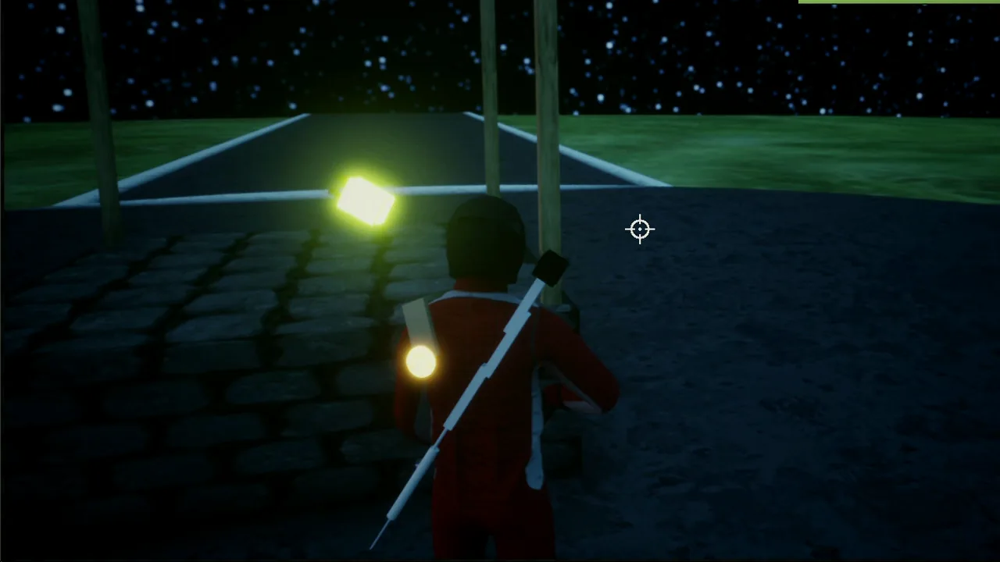
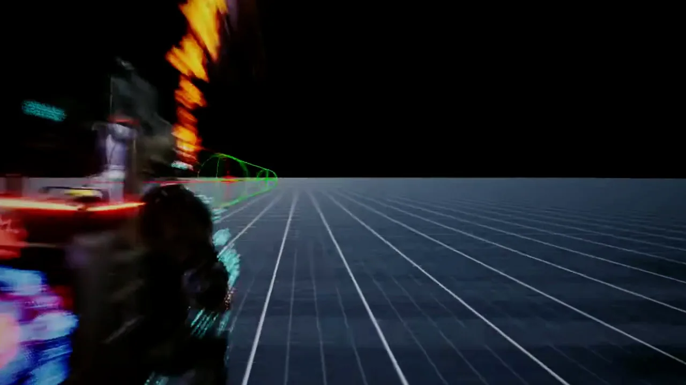
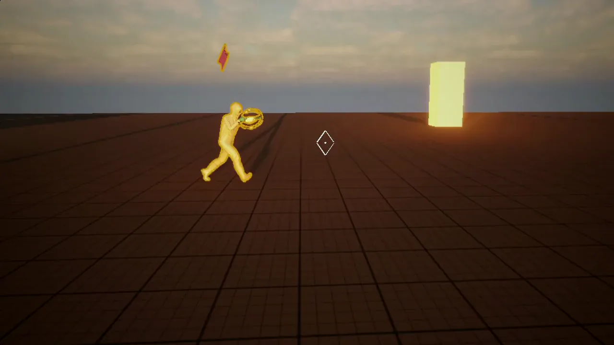
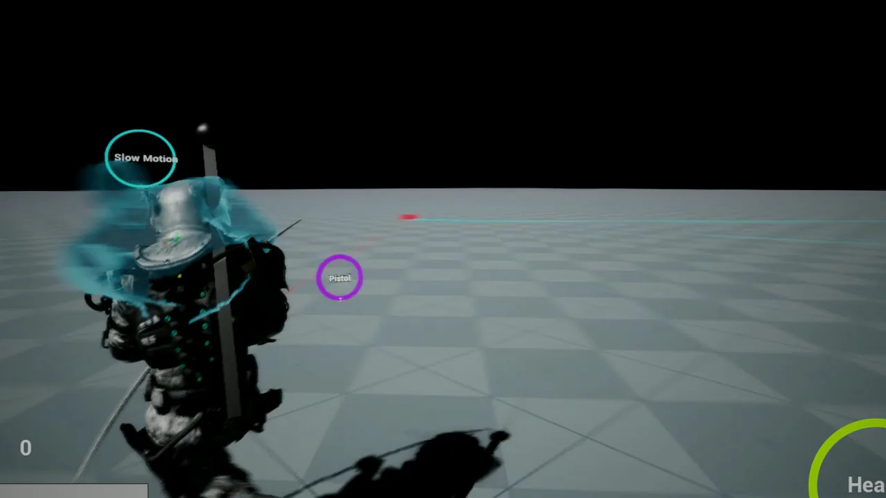
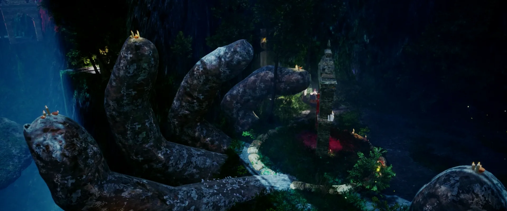

What this deep dive covers
- What the game is, and the four names it had between 2020 and 2025
- One build per year, in footage: movement, combat and a companion, enemy AI with the attack ticket system, and a showcase level
- My role as the only programmer in a team of four, and where the project stands now
What the game is
You play a police officer who comes home to his village in Himachal, where something strange has started to open. In the jungle he meets Vetal, a spirit, and the two become partners.
Together they travel through corrupted areas and collect the stories they find there. You feed each story to Vetal, he grants a boon in return, and you use the boons to beat enemies. Runs follow a roguelite structure.
The project ran from 2020 to 2025 under four names.
- Perfect Me
- Project Ego
- Project Mind
- VETAL 26
A top-down action-horror game
The project started as a top-down, isometric action-horror game in Unreal Engine 4, called Perfect Me. The player could turn into other objects to slip past enemies.
Third-person action-adventure
The team turned the game into a third-person action-adventure with melee combat and several enemy types. The first third-person build was about movement: running, dashing and side-stepping along a night street, with energy and health bars already on screen.
The same year the team decided to add Vetal, a spirit companion who travels with the player. He is not in the 2021 footage, and the game was later named after him.


Combat, more enemy types and a companion
Under its new name, Project Ego, most of 2022 went into combat. Melee gained a blocking shield, hit sparks and fire attacks, and the new enemy types included ones that fire from range.
Vetal was added this year and given powers. In two of the clips below, a hooded companion floats beside the player.
At the end of 2022 we replaced melee with a bow and arrow. Every 2022 clip comes from the melee builds, and the bow appears in the 2025 footage further down.




Enemy AI, bosses and the attack ticket system
I expanded the enemy AI and built the boss system. Group fights were the hard part: if every enemy in an arena attacks at once, the player cannot read the fight.
The fix was an attack ticket system. An enemy may attack only while it holds a ticket, and there are fewer tickets than enemies, so the rest hold back until one frees up. The player still faces a crowd, but only a few enemies attack at a time.
The game also got its final loop this year: you collect stories and trade them to Vetal for boons, run after run. The project was renamed Project Mind, and a new player character with spirit abilities replaced the old one.


Final designs for Vetal and the player
The core design stayed the same in 2024, and the work went into finishing it. Vetal and the player character reached their final designs.
The game also moved off the test maps into a lit forest level. The first clip below is a crowd fight in an arena, with a few enemies closing in at a time while the rest wait.


A showcase level, playable start to finish
The game took its last name, VETAL 26. We built a showcase level that plays from start to finish and cut the pre-alpha trailer from it in July 2025.
The level uses the systems from the earlier years: bow combat, Vetal’s powers, and a story traded to Vetal for a boon.



My role
I was the only programmer, and the other three were game designers. Everything was built in Unreal Blueprints: the combat, the enemy AI and bosses, the attack ticket system, Vetal’s powers and the loop of trading stories for boons.
Outside programming I worked on lighting, characters, animation, locomotion and enemies.
Paused
Development is paused. The game needed a bigger budget than the team of four could fund.